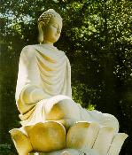

BuddhaSasana
Home Page
This document is
written in Vietnamese, with Unicode Times font
|  | Ðức Phật của chúng taTỳ kheo Thích Minh Châu
|
Lời nói đầu
Lịch sử đức Phật Thích Ca là lịch sử một con người, nhờ công phu tu tập bản thân, đã trở thành một con người hoàn thiện, một bậc Thánh giữa thế gian; "con người vĩ đại nhất sinh ra ở đời này" nếu dùng lại lời của nhà thi hào Ấn độ Tagore.
Bằng cuộc đời của Ngài, và bằng những lời dạy của Ngài được kết tập lại trong ba tạng kinh điển, đức Phật đã khai thị cho loài người biết rằng, bất cứ một người nào, với sự nỗ lực của bản thân, đều có thể vươn lên tới đỉnh cao nhất của giác ngộ và giải thoát, như chính đức Phật vậy.
Có thể nói, không có một tôn giáo nào, một hệ tư tưởng nào đề cao con người và đặt niềm tin vào con người như là đạo Phật. Tính nhân bản tuyệt vời của đạo Phật chính là ở chỗ đó.
Tránh mọi điều ác, làm mọi điều lành, gột sạch nội tâm để trở thành bậc Thánh, một con người hoàn thiện, về đức hạnh và trí tuệ, mỗi người chúng ta đều có khả năng và bổn phận thực hiện lời dạy đó. Ðây là bức thông điệp mà đức Phật đã trao cho loài người chúng ta, cho mỗi người chúng ta. Ðó là ý nghĩa chân chính của nhân sinh, giá trị chân thực của cuộc sống. Không thể có ý nghĩa nhân sinh nào cao quí hơn, khích lệ hơn đối với cuộc sống chúng ta hiện nay.
Chúng tôi từ lâu vẫn cho rằng đời sống của đức Phật Thích Ca, trong nét đại cương cũng như chi tiết đều thể hiện và truyền đạt một cách vô cùng sinh động lời dạy đó của đức Phật. Tin tưởng ở đức Phật, đảnh lễ Ngài và niệm danh hiệu Ngài, chủ yếu là để học tập Ngài về cả hai mặt đức hạnh và trí tuệ, dù chỉ là trong muôn một. Người nào tuy ở xa Phật, nhưng sống có giới hạnh, theo lời Phật dạy, thì cũng như sống gần Phật. Người nào tuy sống bên cạnh Phật, nhưng sống không có giới hạnh, thì cũng không khác gì ở cách xa Phật muôn trùng.
Những người Phật tử Việt Nam chúng ta, tuy sống cách thời đức Phật 2500 năm, nhưng hãy giữ vững niềm tin rằng chúng ta vẫn sống bên cạnh đức Phật nên chúng ta sống có giới hạnh, theo đúng lời dạy trong con đường đạo tám nhánh (Bát chánh đạo).
Sống trong vũ trụ này, được làm người là chuyện khó. Ðức Phật nói rằng: "được làm người khó như một con rùa chột mắt, cứ mỗi trăm năm mới ngóc đầu lên khỏi mặt biển một lần, và tìm cách chui đầu vào lỗ nhỏ của một khúc gỗ trôi lềnh bềnh trên mặt nước, bị gió Ðông, gió Tây, gió Nam, gió Bắc thổi trôi dạt hết phương này đến phương khác". Ðược làm cũng khó như con rùa chột mắt đó muốn chui qua được lỗ nhỏ của khúc gỗ như thế. Trong kinh Tương Ưng V, đức Phật đã dạy: "Ví như này các Tỳ kheo, một người quăng một khúc gỗ có một lỗ hổng vào biển lớn. Tại đấy có con rùa mù, sau mỗi trăm năm nổi lên một lần. Các ngươi nghĩ thế nào, này các Tỳ kheo. Con rùa ấy, sau mỗi trăm năm, nổi lên một lần, có thể chui cổ vào khúc cây có một lỗ hổng hay không?"
"Năm khi mười họa may ra có thể được, bạch Thế Tôn, sau một thời gian dài".
"Ta tuyên bố rằng còn mau hơn, này các Tỳ kheo, là con rùa mù ấy, sau mỗi trăm năm nổi lên một lần, có thể chui cổ vào khúc gỗ có lỗ hổng ấy. Còn hơn kẻ ngu, khi một lần đã rơi vào đọa xứ, để được làm người trở lại. Vì cớ sao? Vì rằng ở đấy không có pháp hành, chánh hành, thiện nghiệp, phước nghiệp. Ở đấy, này các Tỳ kheo, chỉ có ăn thịt lẫn nhau, và chỉ có kẻ yếu bị ăn thịt.." (Tương Ưng V, 485)
"Thật khó được vậy, này các Tỳ kheo, là được làm người. Thật khó được vậy, này các Tỳ kheo, là được Như Lai xuất hiện ở đời, bậc A la hán, Chánh đẳng giác, thật khó được vậy, này các Tỳ kheo, là Pháp và Luật này do Thế Tôn thuyết giảng, chiếu sáng trên đời." (Tương Ưng V, 450 - 460).
Ðức Phật xuất hiện ở đời cũng là chuyện khó như thế. Pháp và Luật được đức Phật truyền bá ở đời cũng là chuyện khó như thế. Chúng ta có ba cái may mắn hiếm có là được sống làm người, được biết đức Phật Thích Ca và Pháp, Luật do đức Phật dạy, ấy thế mà chúng ta lại không biết tranh thủ tối đa ba cái may mắn đó hay sao? Chúng ta lại có thể sống không giới hạnh, trái với lời Phật dạy, để rồi bị nghiệp ác lôi cuốn vào những cõi sống khác thấp hơn, khổ hơn cõi người, và cuối cùng phải phấn đấu trở lại làm người như con rùa chột mắt trong câu chuyện ví dụ của đức Phật hay sao?
Rất mong quý vị Phật tử suy ngẫm về bài học của lịch sử Ðức Phật, về ảnh dụ con rùa chột mắt chơi vơi trên đại dương, về ý nghĩa của nhân sinh, về giá trị chân thực của cuộc sống, về cuộc sống hiện thực này của mỗi chúng ta, làm sao để cho cuộc sống đó thật sự an lạc, hướng thượng, lợi cho mình, lợi cho người, lợi cho đời, lợi cho Ðạo.
Nam mô Bổn sư Thích Ca Mâu Ni Phật.
Tỳ kheo Thích Minh Châu
Chân thành cám ơn anh HDC đã có thiện tâm giúp đánh máy lại quyển sách này (11/99).
[Lời nói đầu]
(1) Lịch sử Ðức Phật Thích Ca; (2) Ðức Phật của chúng ta;
(3) Ðạo Phật và chữ Hiếu; (4) Ðạo đức trong nếp sống người Phật tử